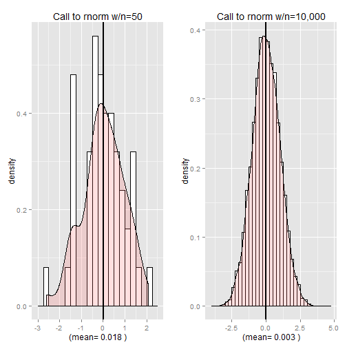

Exploring R's Probability Distributions
A Simple, Intuitive Shiny App Displaying the Effect of Sample Sizes
William Ellis
App Motivation
- Using several common R probability distributions, the app graphically displays the effects of choosing different sample sizes (numbers drawn on a call to an R random number function) on the shape of the resulting plotted distribution.
- The resulting plot displays a histogram overlaid w/a density plot and gives the actual mean of the drawn numbers (theoretical means are described in the Help tab).
- A dramatic convergence is displayed toward the expected theoretical distribution shapes as the user goes from low (n=50) to high (n=10000) draws.
The Way it Works
- The app interface has two select controls, one to choose a distribution and one to choose the number of random numbers to draw for that run.
- The Shiny app is reactive. It passes the input variables to the server which determines which random number function to call, then renders a new plot and a new label, which describes the plot parameters. The reactive plot and text are passed back to the UI.
- A help tab is provided.
An Illustration of the App Running Actual R Code

Conclusions
- This app is meant to give an interactive, intuitive sense of how sampling distributions take their expected shape as one draws more numbers.
- This app might prove useful in an undergraduate introductory statistics course when probability distributions and sampling are introduced.
- This app was also meant to exercise Shiny's UI and server features - particularly the reactive elements.